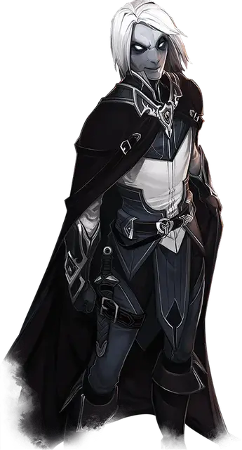

Чейнджлинг
Changeling

Благодаря постоянно меняющейся внешности, чейнджлинги могут находиться во многих обществах незамеченными. Каждый чейнджлинг может неестественным образом принять любое лицо, которое ему нравится. Для некоторых чейнджлингов новое лицо — всего лишь маскировка. Для иных же новое лицо может раскрыть аспект их души.
Первые чейнджлинги в мультивселенной появились в Стране Фей, и чудесная, изменчивая сущность этого плана сохранилась в чейнджлингах до сегодняшнего дня — даже в тех чейнджлингах, которые никогда не ступали в Стране Фей. Каждый чейнджлинг решает, как использовать свою способность менять облик, направляя либо горесть, либо радость Страны Фей. Иногда они принимают новые формы ради озорства или коварства, а в других случаях они надевают новую личность, чтобы исправить ошибки или порадовать угнетенных.
В своей истинной форме чейнджлинги кажутся блеклыми, их черты почти лишены деталей. Редко можно увидеть чейнджлинга в такой форме, потому что типичный чейнджлинг меняет свою форму так же, как другие меняют одежду. Случайная форма — созданная под влиянием момента, без глубины или истории — называется маской. Маска может быть использована для выражения настроения или для достижения определенной цели, а затем может никогда больше не использоваться. Однако многие чейнджлинги развивают личности, которые обладают большей глубиной, создавая целых персонажей с историей и убеждениями. Чейнджлинг-приключенец может иметь несколько личностей для многих ситуаций, включая переговоры, исследования или битву.
Персонажи могут быть общими для нескольких чейнджлингов. В обществе может быть три целителя, однако тот, кто будет работать сегодня принимает образ Андреа, доброго врача. Персонажи могут даже передаваться по наследству, позволяя младшему чейнджлингу воспользоваться контактами, установленными предыдущими пользователями персонажа.
ОСОБЕННОСТИ Чейнджлинга
Вы обладаете следующими особенностями.
Увеличение характеристик. Либо значение одной характеристики по вашему выбору увеличивается на 2, а другой — на 1, либо значение трёх различных характеристик по вашему выбору увеличивается на 1.
Скорость. Ваша базовая скорость ходьбы — 30 футов.
Вид существа. Вы — Фея.
Размер. Ваш размер — Маленький или Средний. Вы выбираете его при создании персонажа.
Инстинкты чейнджлинга. Благодаря вашей связи со Страной Фей, вы получаете владения двумя из перечисленных ниже навыков: Запугивание, Обман, Проницательность, Выступление или Убеждение.
Перевёртыш. Действием вы можете изменить свой внешний вид и голос. Вы сами решаете, как вы будете выглядеть, определяя рост, вес, цвета всего тела, длину волос, пол. Вы также можете регулировать свой размер между Средним и Маленьким. Вы можете стать представителем другой расы, однако ваши игровые характеристики не меняются. Вы не можете скопировать внешний вид существа, которого ни разу не видели, и вы можете принимать облик, который имеет то же базовое расположение конечностей, что и у вас. Ваша одежда и снаряжение не меняются вместе с изменением внешнего вида.
Вы остаётесь в новом облике до тех пор, пока действием не вернётесь к своему истинному облику или пока не умрёте.
Языки. Ваш персонаж может говорить, читать и писать на Общем и ещё одном языке, который по вашему мнению подходит для персонажа.